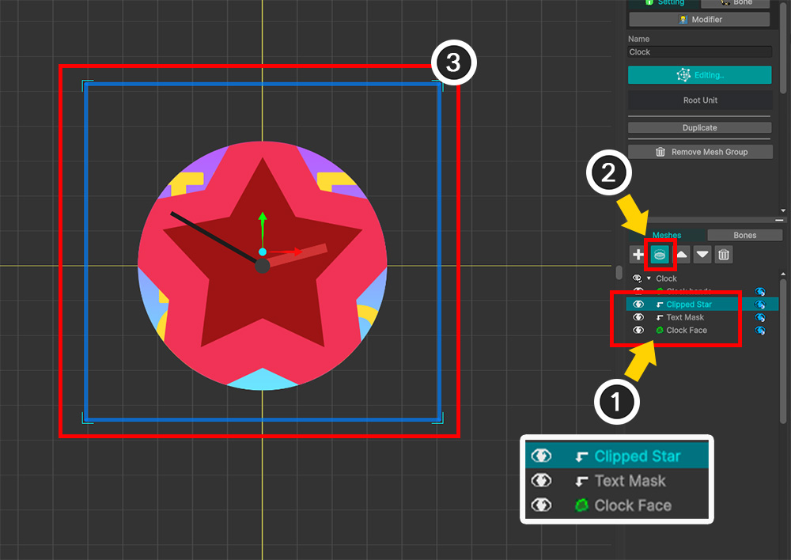
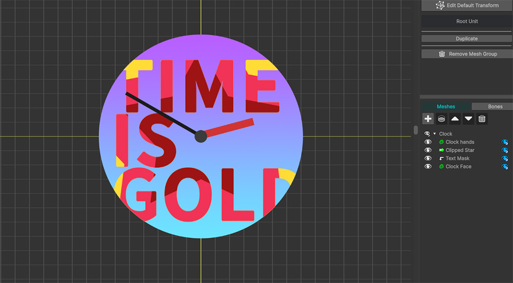
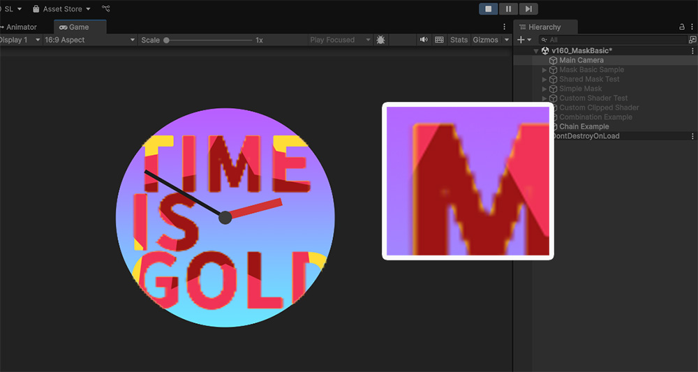
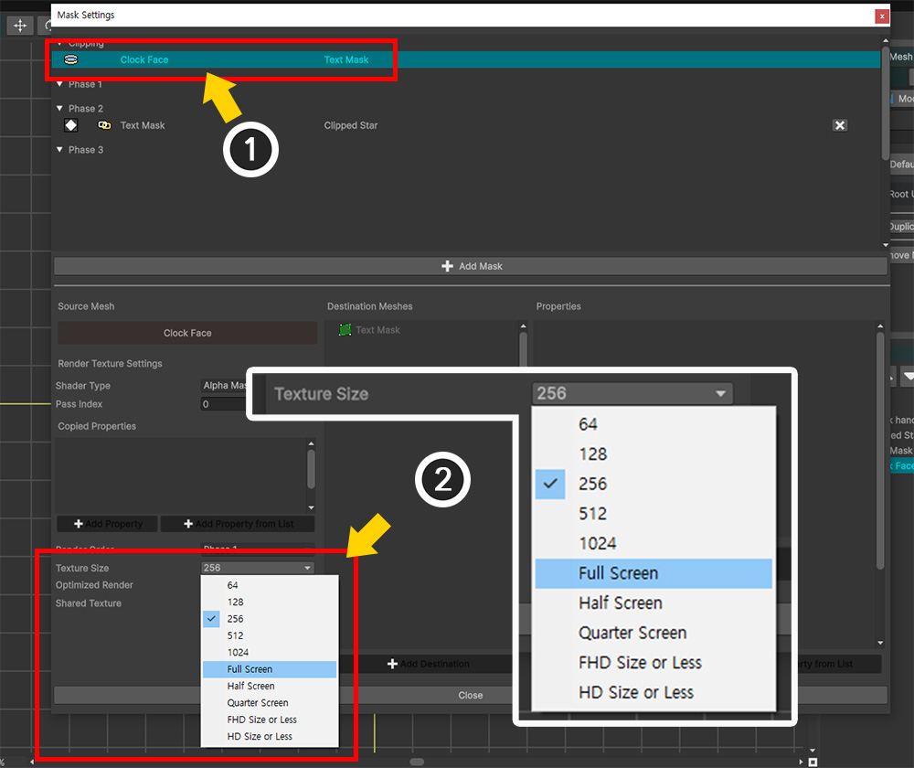
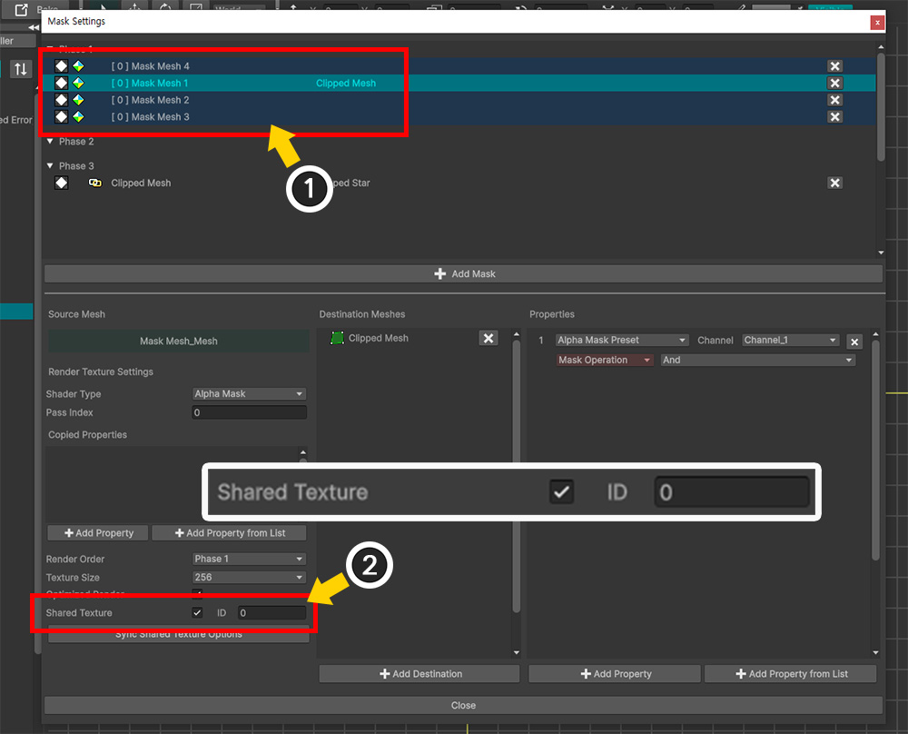
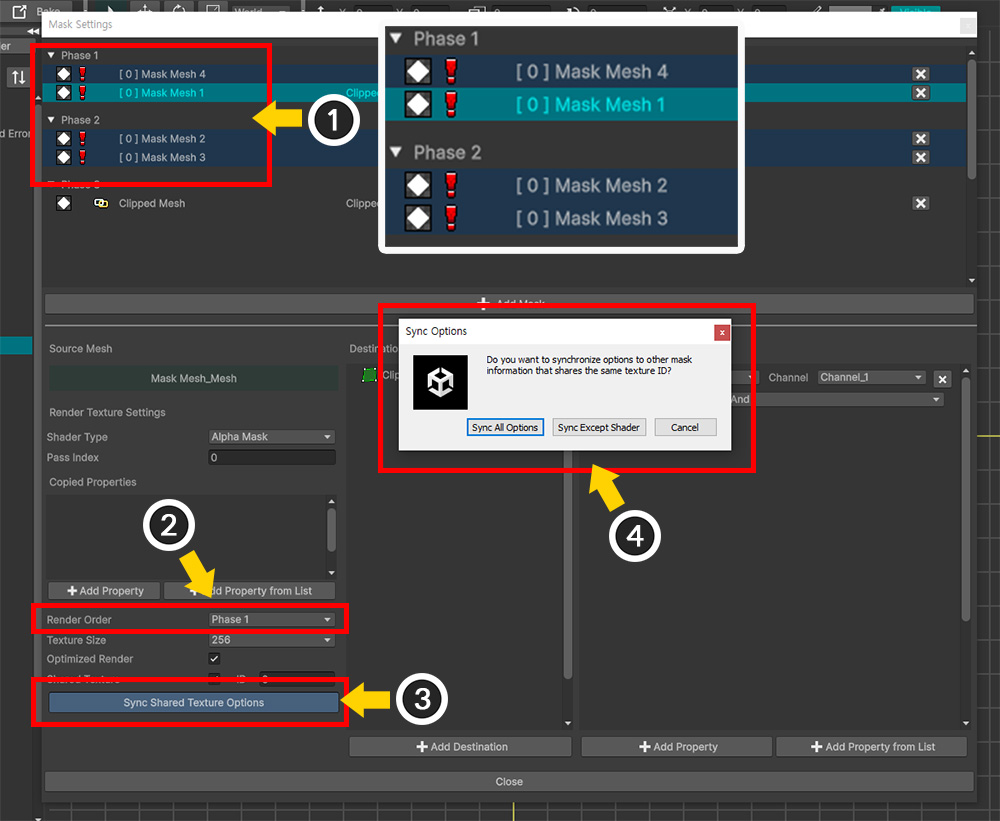

AnyPortrait > Manual > Mask Chain
Mask Chain
1.6.0

When you want to do clipping rendering, there may be cases where the clipping rendering process that passes the mask is performed continuously.
In other words, what this page deals with is the case where the "Clipped Mesh" becomes the "Mask Mesh" for another mesh.
In the image above, "Mesh 1" clips "Mesh 2" as a mask mesh, and the clipped "Mesh 2" clips "Mesh 3" as a mask.
This continuous masking process is called "Mask Chain" in AnyPortrait.
This page explains why Mask Chain is needed and Mask Render Order.

In order to reproduce the case where the clipping mask is applied continuously, we prepared an example like the one above.
The example above is a "clock with text drawn with a star-shaped pattern."
First, the clock face mesh ("Clock Face") is used as a mask to clip the text mesh ("Text Mask").
Then, the clipped text mesh ("Text Mask") becomes a mask to clip the star-shaped mesh ("Clipped Star").

If you think about how to implement this for a moment, it seems like a pretty clock could be implemented if you use the existing Clipping Mask.
Let's try to see what it would look like if we made it using Clipping Mask.
(1) Select the "Text Mask" mesh.
(2) Click the Clipping Mask button to make it clip from the "Clock Face" mesh.

(1) Then select the "Clipped Star" mesh.
(2) Click the Clipping Mask button to set continuous clipping.
(3) When you look at the finished result, you can see that the "Clipped Star" mesh clips the entire clock face area, not just the text.
The intention was to have "text with a star pattern drawn on the clock face", but this method does not work properly.
In this case, Mask Chain is required.

(1) Uncheck the Clipping Mask of the "Clipped Star" mesh, and set only the "Text Mask" mesh to be clipped to the "Clock Face" mesh.
(2) Click the Open Mask Settings button.

(1) You can see that the Clipping Mask Data of the "Clock Face" mesh is already registered.
(2) Click the Add Mask button.
(3) Select the "Text Mask" mesh, which will be the second mask.
(4) Click the Select button.

(1) Click the Add Destination button.
(2) Select the "Clipped Star" mesh.
(3) Click the Select button.

(1) Click the Add Property button.
(2) A property of type "Alpha Mask Preset" is added.

Now, the continuous mask data from "Clock Face > Text Mask > Clipped Star" is completed.
This state is Mask Chain, and the "Text Mask" mesh becomes "Chained Mask".
(1) However, a warning icon has appeared in the mask data item of the "Text Mask" mesh.
This warning icon means that the Mask Chain may not operate properly even though it is generated.
The most important thing to consider in Mask Chain is the "order in which the masks are rendered".
In this example, the normal case is that the masks are generated and passed in the order of "Clock Face > Text Mask > Clipped Star".
However, if the order is wrong and "Text Mask > Clipped Star" is performed first and "Clock Face > Text Mask" is performed later, there is a possibility of clipping errors.
(2) To solve this, select Mask Data and change the value of Render Order to "Phase 2".

(1) You can see that Mask Data has moved to "Phase 2" in the list, and the warning icon has changed to a "Chain" icon.

Let's close the Mask Setting Dialog and check the rendering result.
You can see that the rendering was done as intended and a pretty clock was completed.

When testing in a Unity scene, you can see that the rendering is normal, but the mask quality is low.
This is because the "Optimize Render Texture Quality" feature of the clipping mask does not work when Mask Chain occurs. (Related page)
This is because the "screen coordinate system" required for the "Optimize Quality" process is not constant, since rendering occurs from render texture to render texture.

In this case, to improve the mask quality, you need to adjust the render texture resolution of all Mask Data related to Mask Chain.
(1) Open the Mask Setting Dialog and select the Clipping Mask item of "Clock Face" corresponding to the front part of Mask Chain.
(2) Set the value of Texture Size to an appropriately large value.

(1) Next, select the Mask Data of the "Text Mask" mesh.
(2) Similarly, select a reasonably large value for Texture Size.
Even if Optimized Render is checked, the option is ignored in the Mask Data where the Mask Chain occurs.

Back in the Unity scene, you can see that the quality of the mask has improved.
Mask Rendering Order
Mask data is executed by "Command Buffer" and renders to Render Texture.
The "order in which the command buffer is executed" is also the "order in which the mask data is executed."

When the mask is processed, that is, when the command buffer is executed, is determined by a specific event in the rendering procedure.
Since AnyPortrait's meshes are rendered with the "Transparent" shader, the mask is processed in one of the previous render events: "Before Forward Opaque", "After Forward Opaque", or "Before Forward Alpha".
The "Phase" option refers to these three render events.
The order of execution of command buffers within the same Phase is ambiguous, which can cause render order errors in Mask Chains. Therefore, to resolve render order errors, it is necessary to clearly specify Phase.
The existing Clipping Mask is executed at the same point as Phase 1 of Mask Data, "Before Forward Opaque".
Therefore, if a Mask Chain with Clipping Mask occurs, it must be set to execute at least at Phase 2.
However, the above specification is for "Built-In Render Pipeline", and is integrated into the "Before Rendering" event in "URP".
In this case, the mask processing order is sorted internally by Phase each time.
The result is the same.
Updating a mask and rendering to a render texture are internally different behaviors.
Updating a mask is related to the update logic of modifiers and animations, while rendering to a render texture and sending mask data is related to the rendering event.
So when an issue with a mask occurs, it is important to distinguish between an issue due to "Update" and an issue due to "Rendering".
The issue covered on this page is an issue regarding "Rendering".
Issues due to the order of updates with other scripts are covered in the following manual.
- Execution order problem with assets
If the Mask Chain order is incorrect

Even if the Render Order value in Mask Chain is not appropriate, the rendering result may surprisingly look quite good.
Since rendering is performed every frame, it may be difficult to find rendering errors because "Render Texture from previous frame" is used.
However, rendering errors definitely exist, and they can be found at the moment when the mesh appears or in animations where the mesh moves quickly.
If the render order does not match in Shared Texture

Let's see what happens if the Render Order of each mask data does not match in Shared Texture (Related page).
(1) This is an example with 4 mask meshes.

(1) There is Mask Data for each of the four meshes.
(2) The Shared Texture option of these Mask Data is activated, so the masks are rendered targeting the same Shared Texture.

(1) However, if the Render Order of some of these Mask Data does not match with other Mask Data, a warning icon will appear as shown above.
Shared Texture must generate masks in batches in the same Phase, but having different Phases for each Mask Data makes the operation ambiguous.
(2) To solve the problem, select one of the Mask Data and set the Render Order.
(3) Press the Sync Shared Texture Options button.
(4) When the synchronization message appears, press the Sync All Options button or the Sync Except Shader button to match the options of all Mask Data of the Shared Texture.